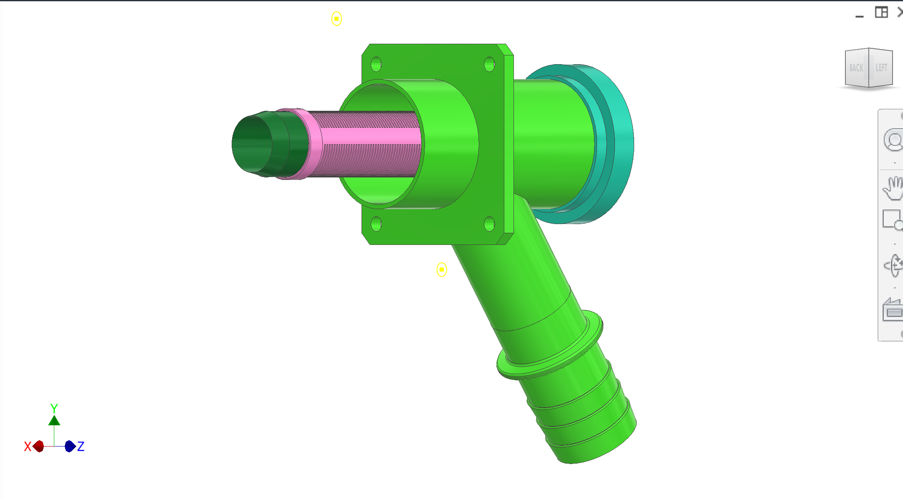
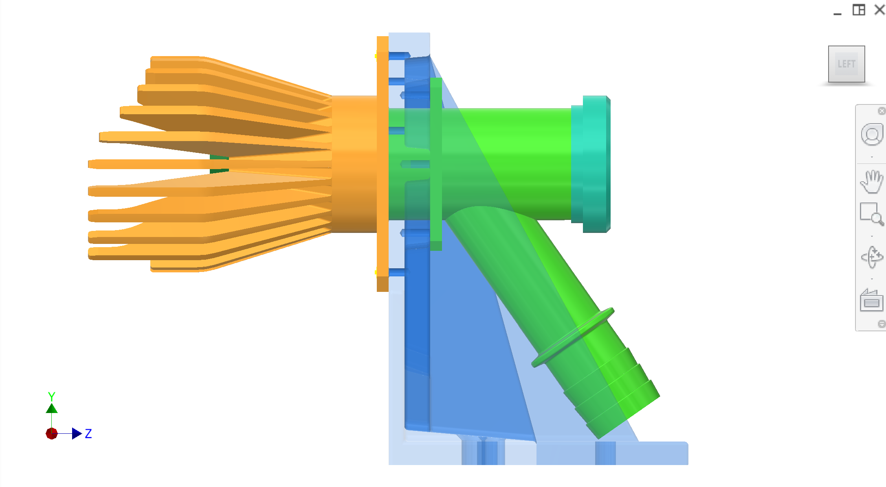

QQ 回收藏库· 妇女私营部门筹资和伙伴关系司概览
果汁集合
部分收藏节。 收集体和向第三方罐体/泵输出输油管,并提供逆流CIP路径。
导言
果汁采集器捕捉果汁退出滤管槽,并通过卫生管和快速连接接口从机器中导出. 收集器还旨在支持一种反向流式CIP模式,通过滤波管向后冲洗净液,并排出插头切割器.
颜色密钥组件( C)
主要组成部分和意图(颜色可能因CAD数字而异)。
| 颜色 | 构成部分 |
|---|
| . . . . . . | 收藏机构. . . . . .304 不锈管组装(概念:标准管大小;主体~57毫米OD为可用性选择,而不是硬性要求); 3.食物区内部表面粗糙度目标。 。 。 。 |
| . . . . . . | 输油管——概念大小,用于常见的快速连接;目前的意图是~38mm OD出口通过肋骨适配器到橡胶软管上. |
| . . . . . . | 快速连接接口. . . . . .标准与下游交配的卫生发酵/杂交肋骨橡胶连接(尽可能选择中国通用的快速连接光谱)用于快速断开. |
| . . . . . . | T- valve / 切换——在"汁液到油箱"与"CIP液体到收集器"之间切换的概念. |
图
系统背景仍在收藏主画廊下方:采集器+过滤器关系和汁收集子组装的侧视图.图1· ;图2。 。 。 。

图1收集器和过滤器——组装关系(图片).

图2侧视图——果汁集合子组装简介.
建议数字(承包商清晰度)
- 添加图编号 :管大小调制(主体OD,输出OD/ID)和焊接配型.
- 添加图: 下游快速连接+肋骨软管适配器以及它如何与橡胶管交配
- 添加图编号 :CIP 管道图示(T-Valve,检查阀,流量方向).
讨论情况
粗略设计意图( M)
- 前进流量——Juice通过过滤管插槽出口进入采集器体,然后通过排气管出口到第三方油箱/泵.
- 标准管大小——当前概念采用304个不锈管大小选择可供使用(主体~57毫米OD;输出大小用于常见的快速连接和软管硬件).
- 地面完成要求- 内部食品区表面必须制造/完成才能保持清洁(目标)径~0.8微米除非承包商提出另一种经卫生鉴定的表面竣工)。
CIP概念(逆流)
- 切换中——在"juice out"对"CIP流体 in"之间选择使用T-val.
- 流程方向——CIP液体通过出口管进入,并淹没收集器室,然后通过滤波管流出,退出插头切线中心线,以冲刷插槽和内部通道.
已知挑战/问题和风险
- 清理死区- 承包商查明收集器几何结构中任何停滞的区域,其中的纸浆可以累积,并提出排水/溢流改进。
- 连接标准· 需要选择一个一致的氯化萘可用快速连接标准(Tri-Clamp或同等标准)和与CIP化学品兼容的密封材料。
承包商的挑战/问题
- 建议使用氯化萘的卫生/快速连接标准以及具体的管径(OD/ID),以满足流量和清洁性要求。
- 验证逆流CIP概念,并提出所需的阀门/检查阀门,压力限制,以及维护/清理协议.
- 为出口管(包括中国的外包方案)提出有力、可使用的管式软管适配器和快速连接战略。
接口
- 输入 :过滤管槽里的汁液
- 输出 :向第三方管道管输出; CIP 输入路径为逆流模式.
- 挂载 :收集器挂在收集器的板块上,并与静电剥离器/收集器几何接口。
接口和容忍度
已知的接口与容性. 链接到相关的子系统.
| 编 | 接口/容忍度 | 相关 |
|---|
| 收藏机构 | 标准304不锈管组装;内部食品区目标径~0.8微米(可清理性要求)。 主体~57毫米OD概念(可用性驱动;可能改变) | 收藏 |
| 输油管 | 概念:用于快速连接+肋骨软管适配器的~38毫米OD输出器大小 | . . . . . . |
| T级 | 在汁液流出和CIP流入之间切换(概念) | . . . . . . |
QQ 回收藏库· 妇女私营部门筹资和伙伴关系司概览